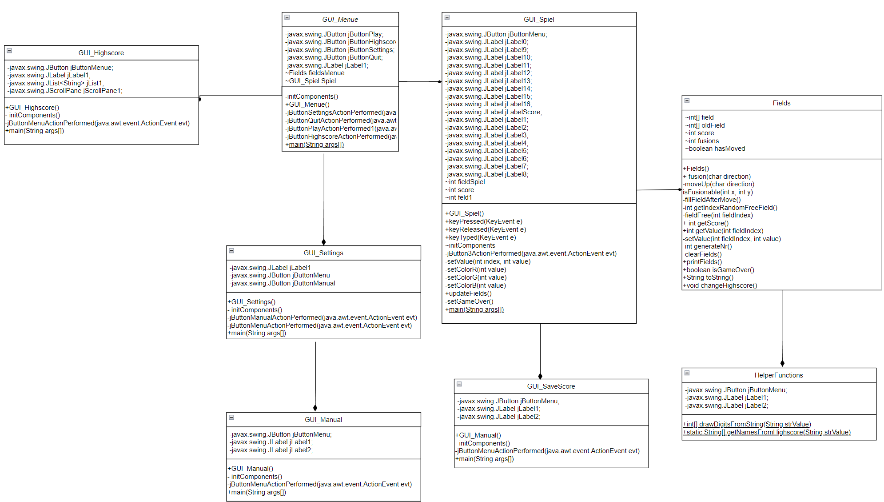

1. Projekt-Beschreibung
Das Projekt "2048" ist ein simples singleplayer Computerspiel. Dabei wird versucht durch Zusammenschieben von Feldern mit gleichen 2er Potenzen die Zahl 2048 zu erreichen.
Die Steuerung erfolgt über die Pfeiltasten der Tastatur.
Nach jedem Zug erscheint ein neues Feld. Während des Spiel werden die Spielzüge gezählt. Wird die Zahl 2048 erreicht gewinnt der Spieler. Sein Name und die Anzahl der benötigten Züge werden anschließend in einer Topscore-Liste gespeichert.
Er verliert, wenn sich keine Felder mehr verschieben lassen.
Ein übersichtliches Menü erleichtert die Navigation zwischen Spiel, Anleitung, Topscore-Liste und den Einstellungen.
2. Features und Anforderungen
2.1 Die wichtigsten Anforderungen an das Projekt sind:
- Spiel soll nach dem Schließen den Spielstand beibehalten damit beim nächsten Starten am selben Punkt weitergespielt werden kann.
- Eine Topscore-Liste, welche von beliebiegen Endgeräten aufgerufen werden kann
- Der erreichte Score wird mit dem eingegeben Spielername verknüpft abgespeichert
- Das Programm soll eine hohe Stabilität sowie eine schnelle Eingabeverarbeitung haben
- Ein Menü, durch welches das Spiel gestartet werden, eine Anleitung sowie die Topscore-Liste geöffnet werden kann.
2.2 Die nicht-funktionalen Anforderungen an das Projekt:
- Leicht verständliche und übersichtliche Benutzeroberfläche
- Dark- & Lightmode
- Das Programm soll auf Windows 7 oder neuer laufen
- Verwaltet wird das Projekt mit Github
- Das Klassendiagramm wurde mit dem Programm Visual Paradigm Onlineerstellt. Das Spiel mit Java in Visual Studio.
3. Architektur
 Diese Architektur ist ein erster Entwurf und soll als Arbeitsgrundlage dienen. Es ist davon auszugehen, dass die vorhandenen Klassen (falls sinnvoll) durch weitere Methoden ergänzt werden.
Auch die verschiedenen Variablen werden im Laufe des Projekts mit ihrem zugehörigem Typ und Name festgelegt.
4. Vorläufige Aufwandsschätzung und Aufteilung
4.1 Aufteilung
Robert: Teamleiter und Verwalter von Github
Adrian: für die GUI zuständig
Dominik, Robert & Eric: Programmierung des Spiels
Nick & Moritz: Programmierung Topscore-Liste
4.2 Aufwand
Programmieren des Spiels: 40h
Programmieren der GUI: 20h
Programmieren der Topscore-Liste: 40h
Debugging: 20h
5. Quellenangaben
Hintergrundbild: https://play.google.com/store/apps/details?id=com.ketchapp.game2048bricks&hl=gsw&gl=US [11.04.2022 14:23]